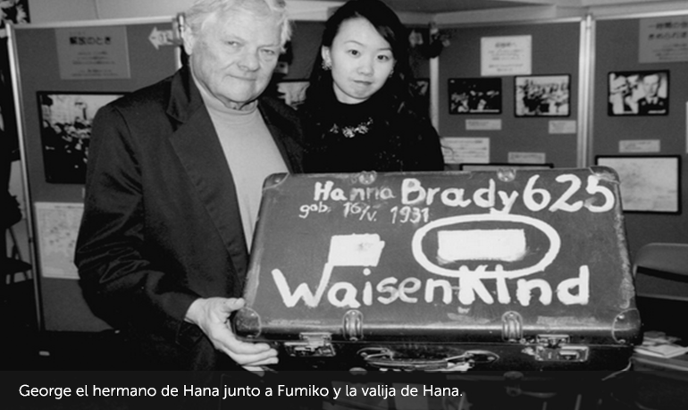
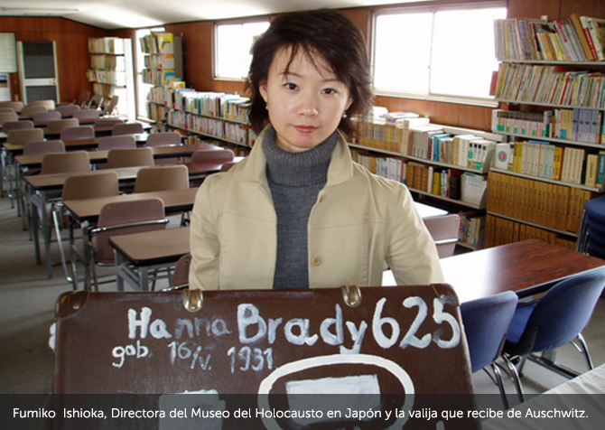

Muchos años después, Fumiko Ishioka, Coordinadora del Museo del Holocausto en Tokio, recibió una maleta marrón procedente de Auschwitz con la inscripción: "Hana Brady - 16 de mayo de 1931 - Waisekind (huérfano)". A partir de allí comenzó una profunda investigación, gracias a la cual hoy conocemos la historia de Hana. Hana fue asesinada en Auschwitz. Su hermano George sobrevivió y emigró a Toronto, Canadá.
